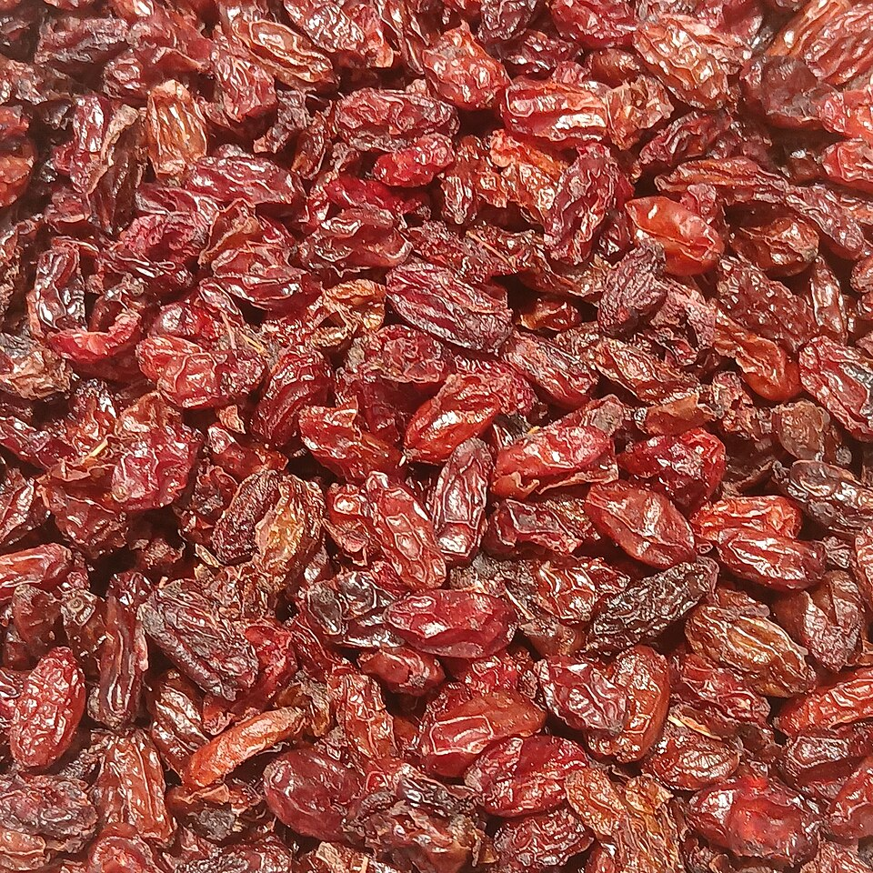

Shānzhūyú · Cornelian Cherry Fruit山茱萸
Corni Fructus · Supplementing herbs: yang-tonifying herbsCorni Fructus · 补虚药·补阳药




- Flavour · nature性味
- sour, astringent; slightly warm酸、涩，微温
- Channels归经
- Liver, Kidney肝、肾经
- Direction升降浮沉
- Sour and astringent, slightly warm without being drying, and entering the liver and kidney channels; it both nourishes these organs and astringes to prevent collapse, combining supplementation with securing and retention酸涩收敛，微温而不燥，入肝肾，既能补益肝肾，又能收涩固脱；补中寓涩，兼具滋补与固摄之性
- Toxicity毒性
- Non-toxic无毒
- Dose (pharmacopoeia)用量（药典）
- 6–12 g (ceiling 12 g)（上限 12 克）
Decocted. It combines liver and kidney nourishment with astringent securing; formula selection and processing should be determined by a qualified Chinese medicine practitioner according to the pattern.煎服。补益肝肾与收涩固脱兼顾；具体配伍及炮制应根据证候由合格中医师判断。 - Pregnancy孕期
- Caution in pregnancy孕妇慎用 The 2020 Chinese Pharmacopoeia does not explicitly classify Shan Zhu Yu as contraindicated during pregnancy. However, Health Canada's TCMI monograph dated May 29, 2026, requires relevant products containing this ingredient to carry a warning against use during pregnancy and breastfeeding. Pregnant and breastfeeding individuals should therefore avoid self-use; any exceptional clinical consideration requires assessment by a qualified healthcare professional. The absence of a pregnancy contraindication in the Chinese Pharmacopoeia does not establish pregnancy safety.中国药典2020年版一部未将山茱萸列为明确的孕期禁用药，但加拿大卫生部2026年5月29日的TCMI专论要求含山茱萸的相关产品标注孕期及哺乳期勿用。因此，孕妇及哺乳期人群应避免自行使用；临床确有需要时，应由具备资质的医疗专业人员评估。药典未列禁忌不等于已证明孕期安全。
- Health Canada加拿大卫生部
- Health Canada: monograph加拿大卫生部：有专论 Health Canada's Natural Health Products Ingredients Database (NHPID) Traditional Chinese Medicine Ingredients monograph (TCMI), dated May 29, 2026, lists Cornus officinalis (Shan zhu yu, Fructus Corni) in Table 1: General Medicinal Ingredients. The monograph requires relevant products to carry the following risk statements: do not use during pregnancy or breastfeeding; consult a healthcare practitioner before use if taking prescription medicines or experiencing a serious medical condition or acute infection; and discontinue use and seek medical advice if symptoms persist or worsen. Inclusion of an ingredient in this database does not mean that every product containing it is licensed for sale in Canada, nor does it establish pregnancy safety.加拿大卫生部天然健康产品成分数据库（NHPID）的传统中药成分专论（TCMI，2026年5月29日）收录 Cornus officinalis（Shan zhu yu，Fructus Corni），列于 Table 1：General Medicinal Ingredients（一般药用成分）。该专论要求相关产品标注以下风险语：孕期或哺乳期勿用；正在服用处方药、有严重疾病或急性感染者，使用前咨询医务人员；症状持续或加重时停止使用并就医。该成分收录不等于所有含山茱萸产品均已获得加拿大上市许可，也不代表已证明其孕期安全。
- Conservation资源与保护
- Cornus officinalis is a commonly used medicinal woody plant, and the available sources do not identify it as an endangered or legally prohibited medicinal resource. Medicinal material should preferably come from properly cultivated and legally harvested sources, with attention to species authentication, origin and quality indicators such as pesticide residues and heavy metals.山茱萸为常见药用木本植物，现有可用来源未提示其属于濒危或依法禁用的药用资源。药用原料以规范栽培和合规采收为宜，采购时应注意物种鉴定、产地及农药和重金属等质量安全指标。
- Source来源
- Cornus officinalis Sieb. et Zucc.. Dried ripe fleshy pericarp of Cornus officinalis, family CornaceaeCornus officinalis Sieb. et Zucc.（山茱萸）。山茱萸科植物山茱萸的干燥成熟果肉
Traditional actions and indications功效与主治（传统）
🏛 Traditional statements, not efficacy claims; the modern evidence is graded further down.以下为传统说法，不是疗效主张；现代证据见下文分级。
- Tonifies and nourishes the liver and kidneys补益肝肾
- Astringes and secures against collapse收涩固脱
Dizziness, tinnitus and soreness of the lower back and knees due to liver and kidney deficiency; impotence, seminal emission, enuresis and frequent urination due to kidney deficiency with failure of containment; uterine bleeding and vaginal discharge due to liver and kidney deficiency with instability of the Chong and Ren vessels; and profuse sweating with impending collapse in a severely deficient patient. Its defining feature is the combination of liver and kidney nourishment with astringent securing.肝肾不足所致的眩晕耳鸣、腰膝酸痛；肾虚不固所致的阳痿、遗精、遗尿、尿频；肝肾亏虚、冲任不固所致的崩漏、带下；大汗不止、体虚欲脱。其补益肝肾与收涩固脱并用，是本品的主要特点。
How to recognise it怎么认
Growing植株 A deciduous shrub or small tree approximately 4–10 metres tall, with grey-brown bark and slender branches. Its leaves are opposite, ovate-elliptic to elliptic, tapering at the tip, with prominent veins and paler undersides. Small yellow flowers grow in clusters before the leaves emerge in early spring. The fruit is an elliptical drupe that turns bright red to purplish red when ripe and contains a hard stone. The medicinal material is the fleshy part of the ripe fruit, not the stone.落叶灌木或小乔木，高约4–10米。树皮灰褐色，小枝细长；叶对生，呈卵状椭圆形或椭圆形，先端渐尖，叶面绿色，背面较浅，叶脉明显。早春先叶开花，花小而黄色，簇生于枝条上。果实为椭圆形核果，成熟时鲜红色至紫红色，内有坚硬果核。药用部分是成熟果实的肉质部分，而非果核。
Decoction pieces饮片 The prepared herb consists of irregular, flattened or sac-like pieces, often wrinkled or split. Its surface is reddish purple to purplish black and may have a slight sheen. The flesh is relatively thick, soft or somewhat sticky, with irregular edges; cavities left after removal of the stones may be visible. It has a faint smell and a distinctly sour and astringent taste. Identification should focus on its dark reddish-purple, wrinkled fruit flesh and characteristic sour, astringent taste.饮片呈不规则片状或囊状，常皱缩、破裂，表面紫红色至紫黑色，有光泽，质柔软或稍黏。果肉较厚，边缘不规则，部分可见果核脱落后的空腔。气微，味酸、涩。选购时注意与其他红色果实类饮片区别，重点观察其紫红至紫黑色、皱缩的果肉性状及明显酸涩味。
Processing炮制
- Raw Shan Zhu Yu山茱萸肉（生品）：: The cleaned fruit pulp is used medicinally to nourish the liver and kidneys and to astringe against collapse.取净山茱萸果肉入药，具有补益肝肾、收涩固脱之功。
- Wine-processed Shan Zhu Yu酒萸肉（酒制山茱萸）：: Wine processing is traditionally considered to enhance its warming and nourishing action on the liver and kidneys; the official processing method and quality standards should follow the pharmacopoeia.以酒制后使用，传统认为可增强温补肝肾之性；具体炮制方法及质量标准应以药典规定为准。
Cautions and incompatibilities使用注意与配伍禁忌
Traditional sources and the standard textbook (not the pharmacopoeia, whose entry has no precautions section) advise against use in cases of exuberant ministerial fire, pre-existing damp-heat, or painful and difficult urination. Because Shan Zhu Yu is sour and astringent, it can retain and contain; it should not be used as a simple astringent when damp-heat is predominant or pathogenic factors remain unresolved. Clinical assessment should distinguish liver and kidney deficiency from patterns such as damp-heat pouring downward; isolated symptoms such as frequent urination or seminal emission are not sufficient grounds for self-treatment. Health Canada's relevant monograph additionally advises against use during pregnancy and breastfeeding.传统与教材口径：命门火炽、素有湿热、小便淋涩者不宜使用（药典山茱萸项下未设注意）。山茱萸味酸涩，具有收敛固涩之性，湿热内盛、邪实未解者不宜单纯使用收涩药，以免留邪。临床应辨别肝肾不足与湿热下注等证候，不可仅凭尿频、遗精等单一症状自行服用。加拿大卫生部相关专论另要求孕期及哺乳期勿用。
Interactions with medicines与西药的相互作用
The permitted sources do not provide sufficient evidence to confirm a specific clinical interaction between single-herb Shan Zhu Yu and any particular Western medicine. A 2025 review and a pharmacokinetic study discuss the pharmacology and pharmacokinetics of Cornus officinalis and its characteristic constituents, but their available abstract conclusions do not establish specific drug interactions. This does not prove that interactions are impossible; people taking prescription medicines should consult a physician or pharmacist.在本题限定的可用来源中，尚未找到能够确认山茱萸单味饮片与特定西药存在临床相互作用的充分证据。2025年相关综述及药代研究涉及山茱萸及其特征成分的药理、药代资料，但现有摘要结论不足以建立具体西药相互作用。不能据此认定绝无相互作用；合并使用处方药者应向医师或药师咨询。
Modern research, graded现代研究（分级）
- E1 A 2023 comprehensive review of Cornus officinalis summarized its traditional uses, phytochemistry and pharmacological research. The authors emphasized that further research and clinical studies are needed to validate existing findings and establish safe and effective clinical applications. This review does not establish definite clinical efficacy for the single-herb dried fruit.2023年一篇关于山茱萸的综合综述总结了其传统应用、植物化学成分及药理研究，并指出其临床应用仍需要进一步研究和临床试验，以验证现有发现并建立安全、有效的临床应用。该综述不能作为山茱萸单味饮片已经具有明确临床疗效的证据。
- E2 A 2009 randomized, double-blind, placebo-controlled human study investigated a combination containing red ginseng extract, Torilis fruit and Cornus fruit in relation to facial wrinkles and type I procollagen synthesis. The abstract attributes the reported findings to red ginseng; these results cannot establish the same human effects for Shan Zhu Yu alone or for its isolated constituents.2009年一项随机、双盲、安慰剂对照人体研究考察了含红参提取物、蒺藜果及山茱萸果的复方制剂与面部皱纹和I型前胶原合成的关系。研究摘要将相关结果归因于红参的作用，不能据此认定山茱萸单味或其独立成分具有相同的人体效果。
- E4 A 2023 study investigated 7-O-galloyl-D-sedoheptulose (GS), a polyphenol derived from Cornus officinalis, in a type 2 diabetic mouse model involving hepatic and pancreatic damage. The abstract suggests that the observed activity may be associated with antioxidant stress and anti-inflammatory properties. The research concerned an isolated polyphenol in mice, not human clinical treatment with the dried fruit, and cannot establish clinical glucose-lowering efficacy.2023年研究考察了山茱萸来源多酚7-O-galloyl-D-sedoheptulose（GS），在伴有肝脏及胰腺损伤的2型糖尿病小鼠模型中研究其相关作用。摘要认为GS的相关作用可能与抗氧化应激及抗炎特性有关。研究对象是小鼠模型中的单体多酚，不是山茱萸饮片的人体临床试验，不能直接外推为临床降糖疗效。
- E4 A 2020 in vitro study examined Cornus officinalis extract (EECF) in human HaCaT keratinocytes exposed to PM2.5-induced oxidative stress. The abstract reported a protective effect of the extract in cultured human keratinocytes. The research concerned an extract in a cell culture system, not the clinical effects of orally consumed Shan Zhu Yu in humans.2020年体外研究使用山茱萸提取物（EECF）考察其对PM2.5诱导的人HaCaT角质形成细胞氧化应激的影响。摘要报告该提取物对培养的人角质形成细胞具有保护作用；研究对象是细胞培养体系中的提取物，而不是口服山茱萸饮片的人体临床效果。
In the classics古籍原文
「山茱萸味酸無毒。主治心下邪氣寒熱，溫中，逐寒濕痹，去三蟲。久服輕身。一名蜀棗。生山谷。」——神农本草经
Shennong Bencao Jing (Divine Farmer's Materia Medica)
The Shennong Bencao Jing describes Shan Zhu Yu as sour and non-toxic, traditionally used for pathogenic influences and alternating cold and heat below the heart, warming the middle and expelling cold-damp impediment. The passage reflects early materia medica understanding of its warming and cold-damp-dispelling properties. Later medical literature developed its applications in nourishing the liver and kidneys and securing against collapse, which form the basis of its modern traditional indications.《神农本草经》记载山茱萸味酸、无毒，主治心下邪气寒热，并提到温中、逐寒湿痹等作用。原文反映了早期本草对其温补与祛除寒湿作用的认识。后世本草逐渐发展出补益肝肾、收涩固脱的临床应用体系，成为现代中药学认识山茱萸的核心功效。
Where it is used: the web串联：它在哪些方里、连到哪里
Classical formulas (Shanghan, Jingui)经方（伤寒、金匮）
| Formula方 | Role角色 | Dose: original / today剂量：原书／今用 | Partners in the formula同方配伍 |
|---|---|---|---|
| Kidney Qi Pill肾气丸（金匮肾气丸） | Minister臣 | original text: see the Chinese original四两 | Gan Di Huang (dried rehmannia)干地黄 · Shan Yao (Chinese yam)山药 · Ze Xie (water plantain rhizome)泽泻 · Mǔdānpí (Moutan Bark)牡丹皮 · Fúlíng (Poria)茯苓 · Guìzhī (Cassia twig)桂枝 · Fùzǐ (Aconite lateral root (processed))附子 |
Later formulas (Song to Qing)时方（宋元明清）
| Formula方 | Role角色 | Dose: original / today剂量：原书／今用 | Partners in the formula同方配伍 |
|---|---|---|---|
| Six-Ingredient Rehmannia Pill六味地黄丸 | Minister臣 | original text: see the Chinese original四两（酒润） 12 g | Shúdìhuáng (Prepared rehmannia root)熟地黄 · Shan Yao (Chinese yam)山药 · Ze Xie (water plantain rhizome)泽泻 · Mǔdānpí (Moutan Bark)牡丹皮 · Fúlíng (Poria)茯苓 |
| Anemarrhena, Phellodendron and Rehmannia Pill知柏地黄丸 | Minister臣 | original text: see the Chinese original四两 | Shúdìhuáng (Prepared rehmannia root)熟地黄 · Shan Yao (Chinese yam)山药 · Zhīmǔ (Anemarrhena rhizome)知母 · Huángbǎi (Phellodendron Bark)黄柏 · Ze Xie (water plantain rhizome)泽泻 · Mǔdānpí (Moutan Bark)牡丹皮 · Fúlíng (Poria)茯苓 |
Folk and single-herb remedies偏方、验方、单方
| Formula方 | Use用法 | Self-use能否自用 |
|---|---|---|
| Cotton-wrapped ear plug with Mǔdānpí and Shānzhūyú powder (hearing loss)牡丹山茱萸散绵裹塞耳（耳聋） | External use外用 | Literature record only: not advised for self-use仅作文献记录，不建议自行使用 |
Patterns reached through these formulas经由这些方连到的证
Exam notes (HER)考点（HER）
HER examination essentials: (1) It is classified as a deficiency-supplementing herb and traditionally grouped among yang-tonifying herbs in Chinese materia medica textbooks. (2) Its nature and flavours are slightly warm, sour and astringent, and it enters the liver and kidney channels. (3) Its principal actions are nourishing the liver and kidneys and astringing to secure against collapse. (4) Key indications include dizziness, tinnitus and lower back and knee soreness from liver and kidney deficiency, as well as impotence, seminal emission, enuresis and frequent urination from kidney deficiency with failure of containment. (5) It is also used for uterine bleeding, vaginal discharge and profuse sweating with collapse. (6) The pharmacopoeial dosage is 6–12 g. (7) Avoid use in exuberant ministerial fire, pre-existing damp-heat, and painful or difficult urination. (8) Health Canada's TCMI monograph advises against use during pregnancy and breastfeeding; the absence of a pregnancy contraindication in the Chinese Pharmacopoeia must not be mistaken for established safety. (9) Understand its dual nourishing and astringent actions, and remember that astringent herbs should not be used alone when damp-heat or excess pathogenic factors predominate.HER重点：①药物分类为补虚药，传统教材归入补阳药；②性味酸、涩、微温，归肝、肾经；③核心功效为补益肝肾、收涩固脱；④主治肝肾不足的眩晕耳鸣、腰膝酸痛，以及肾虚不固的阳痿、遗精、遗尿、尿频；⑤还用于崩漏带下、大汗虚脱；⑥药典用量为6–12g；⑦命门火炽、素有湿热、小便淋涩者不宜；⑧加拿大卫生部TCMI专论要求孕期及哺乳期勿用，不能将药典未列孕期禁忌误读为已证明安全；⑨辨别其补益与收涩双重作用，注意湿热邪实者不宜单纯使用收涩药。
Sources依据
- Chinese Pharmacopoeia Commission. Pharmacopoeia of the People's Republic of China, 2020 edition, vol. I国家药典委员会《中华人民共和国药典》2020 年版一部
- Zhong Gansheng (ed.). Chinese Materia Medica (national TCM higher-education textbook series)钟赣生主编《中药学》（全国中医药行业高等教育规划教材）
- Health Canada, NHPID monograph: Traditional Chinese Medicine Ingredients (TCMI), May 29, 2026 ↗
- Park et al. A systematic review on anti-diabetic action of 7-O-galloyl-D-sedoheptulose, a polyphenol from Corni Fructus, in type 2 diabetic mice with hepatic and pancreatic damage. Drug Discov Ther. 2023 ↗
- Deng et al. A comprehensive review of Cornus officinalis: health benefits, phytochemistry, and pharmacological effects for functional drug and food development. Front Nutr. 2023 ↗
- Cho et al. Red ginseng root extract mixed with Torilus fructus and Corni fructus improves facial wrinkles and increases type I procollagen synthesis in human skin: a randomized, double-blind, placebo-controlled study. J Med Food. 2009 ↗
- Fernando et al. Extract of Cornus officinalis Protects Keratinocytes from Particulate Matter-induced Oxidative Stress. Int J Med Sci. 2020 ↗
- Cui et al. Cornus officinalis Sieb.: An updated review on the ethnopharmacology, phytochemistry, pharmacology, toxicology, and pharmacokinetics. J Ethnopharmacol. 2025 ↗
- Liu et al. [Metabolomics and pharmacokinetics of Corni Fructus in ameliorating myocardial ischemic injury]. Zhongguo Zhong Yao Za Zhi. 2025 ↗